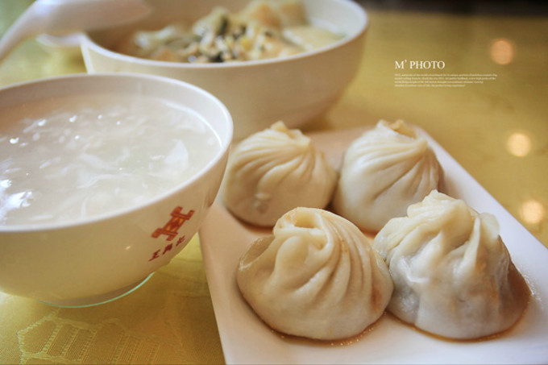
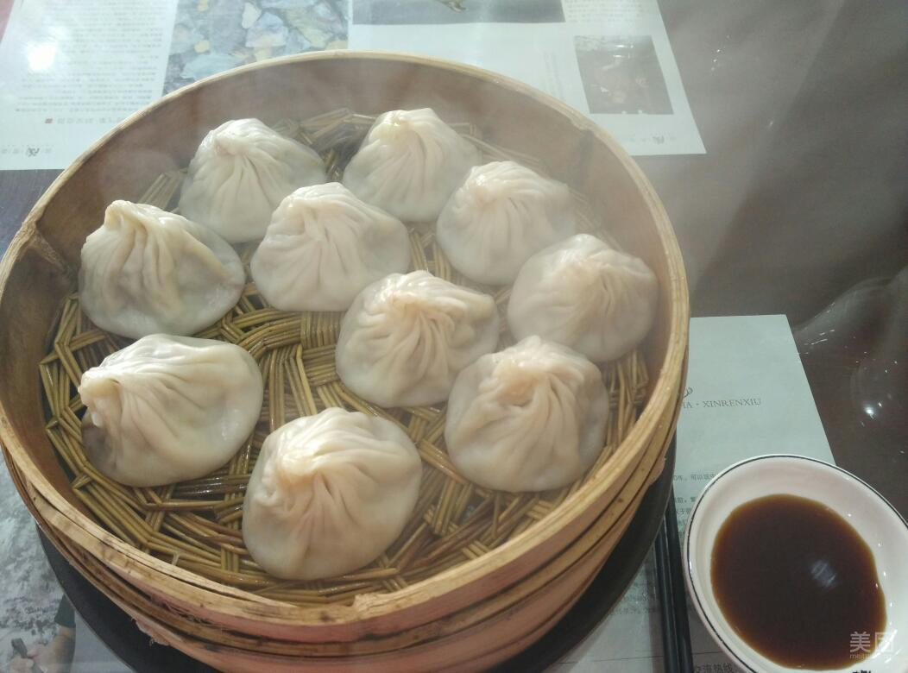

遗路苏行
首页
团队介绍
非遗
返回上级


<
>
非遗介绍
无锡小笼包又称小笼馒头，是江苏省无锡市的一道传统名菜，属于苏菜系，该菜品已有百年历史，选用上等面粉制作、选料精细、小笼蒸煮，南方口味。具有夹起不破皮，翻身不漏底，一吮满口卤，味鲜不油腻等特色。馒头紧酵皮薄（注：传统无锡小笼馒头做法中，馒头皮不发酵，因此蒸熟后皮薄而不破，很有嚼劲）、馅多卤足、鲜嫩味香，秋冬时，馅心中加入熬熟的蟹黄油，即为著名的“蟹粉小笼”，食时鲜美可口。
食用指南
由于汤汁丰盈，小笼包的吃法也与其它包子不同。包子端上来，取一小碟，倒入少许玫瑰香醋和嫩姜丝佐料，用筷子轻轻地夹起小笼包子移入浅碟，先在薄如蝉翼的包子皮上咬一小口，然后慢慢地吮吸其中热烫的汁液，一边吮吸，一边品尝，香甜鲜美的滋味便在口腔中弥散开来。汤汁吸得差不多了，再将整个包子吞入口中品味。口诀：“轻轻提，慢慢移，先开窗，后喝汤。”这样的吃法，一来可避免汤汁喷溅、烫伤口唇，二来是在轻啜过程中享受其鲜美的味道。